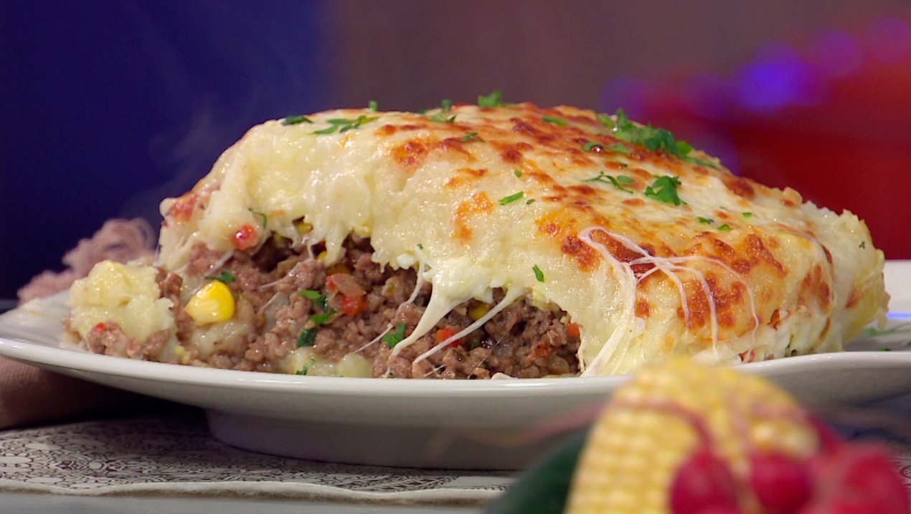

Pastel de Papas

El pastel de papa es una comida que asemeja un pastel, por contar con varias capas. En este caso, se intercala puré y carne con queso.
Ingredientes
- Papas
- carne molida
- Queso
- Condimentos a gusto
Preparación
- Se pelan las papas, se las corta en pedazos y se las hierve hasta que quedan blandas y se puedan hacer puré
- Se cocina la carne molida con los Condimentos y se la deja enfriar
- Luego de hacer puré, se coloca un poco en una fuente y se hace una base uniforme. Sobre la base, se hace un piso de carne y queso y se cubre con papas.
- Repetir hasta que esté terminado.